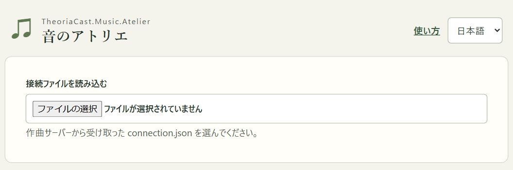
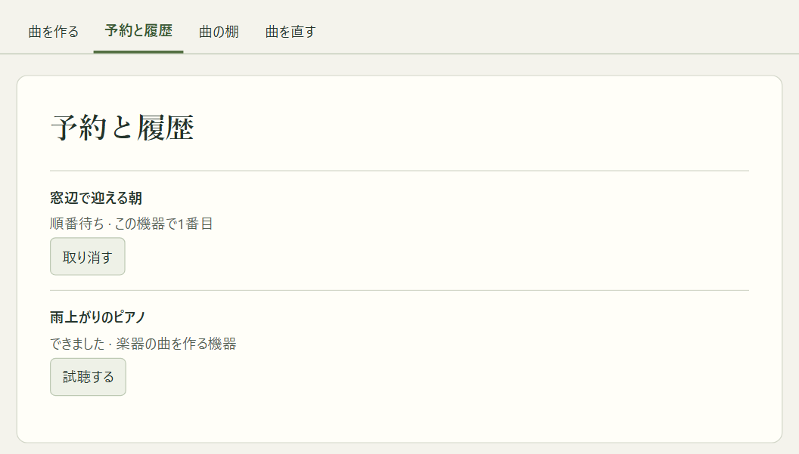
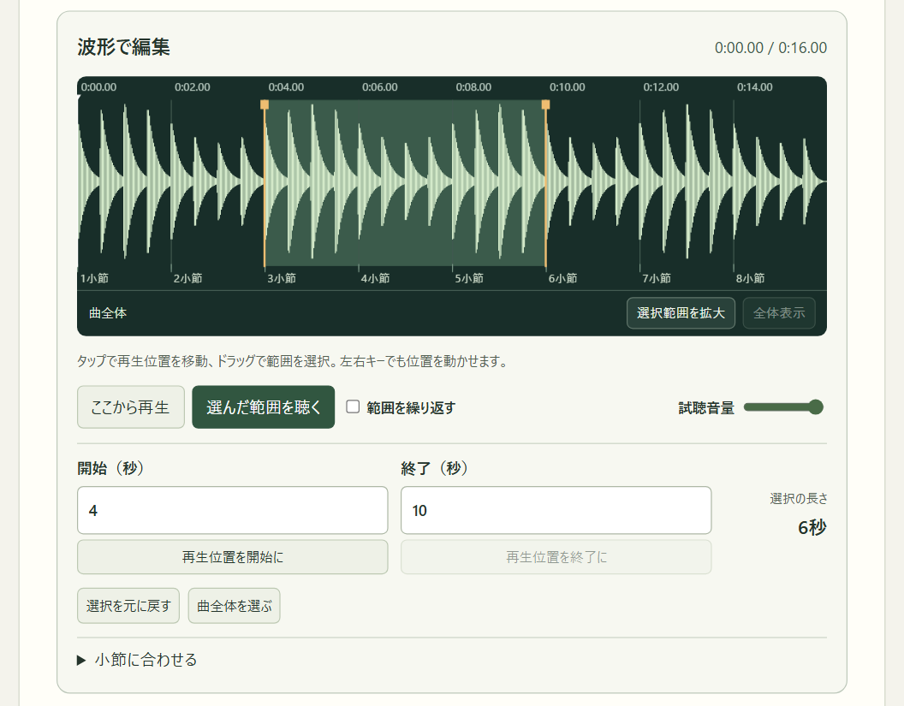
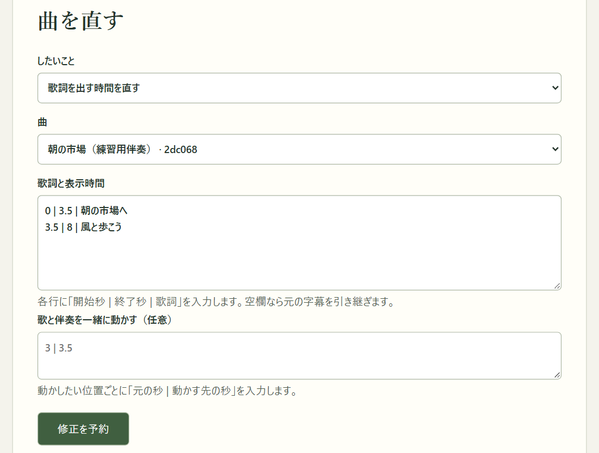
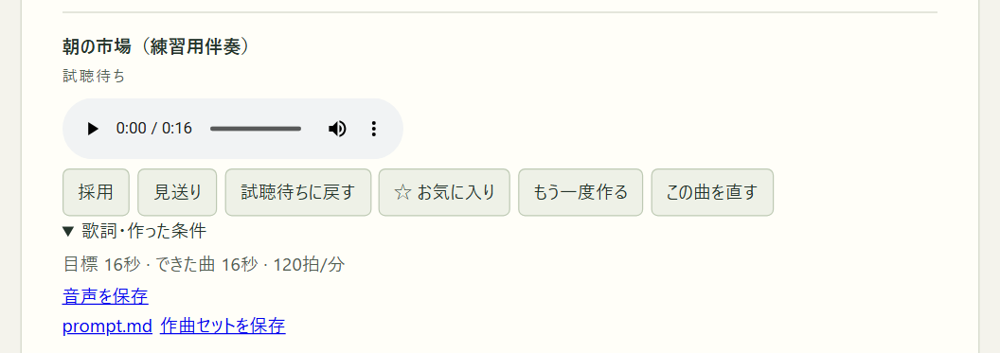
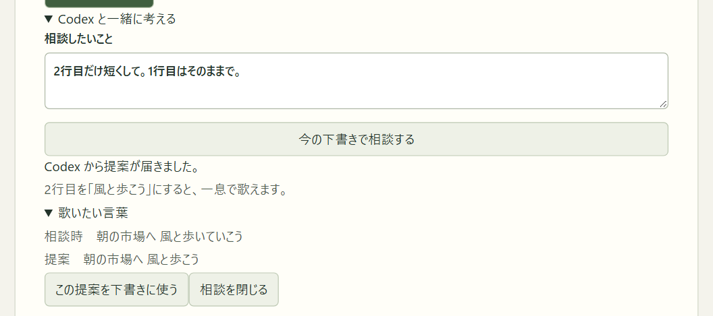

音のアトリエ 操作ガイド
初回の接続から、予約した曲を聴いて気になる部分を直すところまで、実際の画面に沿って進めます。画像を選ぶと原寸で表示できます。
1. 接続ファイルを読み込む
- 利用端末で Atelier を起動し、ブラウザで http://localhost:39395/ を開きます。
- 「接続ファイルを読み込む」を押し、GPU 機の API が作成した connection.json を選びます。ファイルには利用トークンが入っています。
- サーバー名が「接続中」になるのを待ちます。別のファイルを追加すると接続先を切り替えられます。

2. テーマを決めて作曲を予約する
- 「曲を作る」で「楽器だけ」または「歌のある曲」を選び、テーマ、雰囲気、長さを入力します。
- 歌詞欄には歌う行だけを記入します。「ピアノで始める」などの演奏指示は「曲の指示書」に書きます。
- 「作曲を予約」を押します。音源を作るのは、予約を引き受けた機器が空いたときです。

3. 予約の順番と進み具合を見る
- 「予約と履歴」で対象のタイトルを探します。「順番待ち」の間は、その機器での順番を確認できます。
- 「作っています」になると、担当の機器や進み具合が表示されます。必要な場合は「取り消す」で中止できます。
- 「できました」になったら「試聴する」を選びます。歌の場合は、歌詞との照合結果や聞き直したい箇所も確認します。

4. 曲の棚で試聴・採用する
- 「曲の棚」で再生ボタンを押して聴きます。
- 使う曲は「採用」、あとで探しやすくしたい曲は「お気に入り」にします。「歌詞・作った条件」で歌詞や実際の長さを確認できます。
- 「この曲を直す」で編集画面へ進みます。「もう一度作る」は同じ条件で別の予約を作ります。

5. 波形で区間を選んで直す
- 「切り取り・音の出入り」では、波形をタップして再生位置を決め、ドラッグで範囲を選びます。開始・終了の秒数を直接入力することもできます。
- 「選んだ範囲を聴く」で境界を確認します。「選択範囲を拡大」や「範囲を繰り返す」で細かく調整できます。一定テンポなら「小節に合わせる」を開きます。
- 部分差し替えは「一部分を別の曲に差し替える」を選び、差し替え元の曲と開始秒を指定します。「修正を予約」で新しいトラックを作ります。

6. 歌詞を直す
歌う言葉を変える
たとえば「風と歩いていこう」が一息で歌いにくければ、2行目だけを「風と歩こう」に短くできます。「曲を作る」で「歌のある曲」を選び、「歌いたい言葉」に歌う行を一行ずつ入れます。
朝の市場へ
風と歩こう「ピアノで始める」「2行目は静かに」などは「曲の指示書」に書きます。[Intro] などの見出しも歌詞欄から外します。すでにある歌を直すときは、元の曲の「歌詞・作った条件」で「作曲セットを保存」を押し、「曲を作る」→「歌詞・楽譜・作曲セット」でその ZIP を読み込みます。「歌いたい言葉」を直して「作曲を予約」すると別のテイクができます。手元の歌詞だけを差し替える場合は、同じ画面で UTF-8 の lyrics.txt を読み込めます。
同じ言葉の読み方を直す
歌詞の表記を「市場」のまま「しじょう」と歌わせる例です。初回の予約なら「歌詞・楽譜・作曲セット」の「読み置換」に、完成した歌なら「曲の棚」→「この曲を直す」→「ことばの読みを直す」の「ことばと読み方」に、次のように一組ずつ入力します。
市場 → しじょう置換は歌詞全体の同じ文字列に適用されます。「市場へ」だけを変えたいときは 市場へ → しじょうへ のように前後の言葉を含めます。「修正を予約」したら「予約と履歴」で照合回数と「要確認」の内容を見ます。標準の歌唱ワーカーは最大3テイクまで照合します。新旧テイクを聴き比べ、意図した発音になった方を採用してください。
字幕が早いとき、歌の入りが早いとき
「この曲を直す」→「歌詞を出す時間を直す」を開きます。字幕だけを直すときは「歌詞と表示時間」に 開始秒 | 終了秒 | 歌詞 の順で、残したい字幕行をすべて入力します。下の例では再生開始から3.5秒で2行目に切り替わります。下段の「歌と伴奏を一緒に動かす」は空欄にします。
0 | 3.5 | 朝の市場へ
3.5 | 8 | 風と歩こう
録音の4秒の位置にある歌い出しを4.5秒へ動かす場合は、下段に 4 | 4.5 と入力します。前の区間が伸びて、歌と伴奏が一緒に動きます。上段を空欄にすると元の字幕が引き継がれます。「修正を予約」し、完成した曲を再生して、声の入りと字幕の切り替わりを確認します。別の歌い方を使いたい場合は、新しいテイクを作り、歌と伴奏を含む区間ごと波形で差し替えます。
7. 作ったファイルを自分の端末に保存する
- 「予約と履歴」で目的の曲が「できました」になったら「試聴する」を選びます。「曲の棚」から直接開くこともできます。
- 曲名と再生音を確かめ、曲の下の「歌詞・作った条件」を開きます。「音声を保存」を押すと、そのテイクが
曲名.wavとしてブラウザを使っている端末にダウンロードされます。編集・合成後の音源は、修正版の曲で同じ操作をします。 - ブラウザのダウンロード履歴から「フォルダーに表示」を選ぶと実ファイルを開けます。保存先を尋ねられた場合は自分で選んだフォルダーを開いてください。クラウドの GPU で作った曲も同じ手順です。

歌詞・指示書・再現用データも持ち出す
- 曲を聴く・動画で使うには WAV を保存します。
- 歌詞や指示書を編集するには、同じ欄の
lyrics.txt（元の歌詞）、prompt.md（指示書）、score.abc（楽譜）を選びます。singing.txtがあれば読み置換後の歌唱用テキストも確認できます。表示されるファイルはテイクによって異なります。 - 作曲の続きを別の端末で行うには「作曲セットを保存」で
composition.zipを取得し、移動先の「歌詞・楽譜・作曲セット」で読み込みます。ZIP には作曲条件と素材が入ります。音源も必要なら WAV も保存してください。 - 元のテイクの再現を試すには、提供される曲で
generation.jsonを保存し、読み込み後に「元テイクを再現」を選びます。生成後に元の WAV との照合結果を確認できます。
Codex や Claude Code から予約した場合も「曲の棚」は共通です。「完成したらトラック番号と、この端末で音声を開くリンクを返して」と頼めます。字幕ファイルがある曲では、同じ端末で http://localhost:39395/tracks/トラック番号/captions を開き、WebVTT 字幕として保存することもできます。別の端末では、その端末の Atelier で同じサーバーを選びます。
トラック番号から WAV を直接保存する
Atelier を起動した端末で、保存先のフォルダーをターミナルで開きます。TRACK_ID を完成したトラック番号に、my-take.wav を希望のファイル名に置き換えます。Windows の例です。
curl.exe --fail --output my-take.wav http://localhost:39395/tracks/TRACK_ID/audioLinux では先頭の curl.exe を curl にします。
8. Codex・Claude Code に歌詞の相談をする
SKILL.md は、AI が作曲相談を読み、歌詞や指示書の提案を画面に返すための手順書です。MCP は、その AI が起動中の Atelier を操作する接続口です。利用する端末で Atelier を起動し、connection.json を読み込み、目的のサーバーを選んでから設定します。
展開した Atelier 配布物の skills/theoriacast-music/ をフォルダーごとコピーします。中の SKILL.md と references/ja.md の位置関係を保ちます。GitHub でスキルの内容を読む
Codex を使う場合
- 作業プロジェクト内に
.agents/skills/theoriacast-music/SKILL.mdがある状態にします。 - 同じ端末のターミナルで次のコマンドを実行し、そのプロジェクトで Codex の新しい会話を開きます。
codex mcp add theoriacast-music --url http://localhost:39395/mcp
codex mcp list会話で $theoriacast-music を指定し、「接続中の作曲機器を確認して」と頼みます。Codex のスキル · MCP 接続
Claude Code を使う場合
- 作業プロジェクト内に
.claude/skills/theoriacast-music/SKILL.mdがある状態にします。 - そのプロジェクトのターミナルで次のコマンドを実行します。
Connectedを確認し、そこで Claude Code を開きます。
claude mcp add --transport http theoriacast-music http://localhost:39395/mcp
claude mcp get theoriacast-music会話で /theoriacast-music 接続中の作曲機器を確認して と入力します。接続の状態は /mcp でも確認できます。Claude Code のスキル · MCP 接続
下書きに提案を受け取る（どちらも共通）
- Atelier で歌詞を入力し、「Codex と一緒に考える」を開きます。v0.1.0 では Claude Code を使うときもこの名前です。「2行目だけ一息で歌える長さにして。1行目はそのままで」と入力して「今の下書きで相談する」を押します。
- 「依頼文をコピー」を押し、選んだ AI の会話に貼り付けます。相談番号が入った依頼文だけで足ります。接続ファイルとトークンは Atelier 側で管理します。
- Atelier に戻り、「相談時」と「提案」の歌詞を読み比べます。「この提案を下書きに使う」を押すと歌詞欄に反映され、さらに手で直せます。納得したら「作曲を予約」を押し、完成後は音声を保存します。

完成した歌の発音を直したいときは「このトラックの『市場』を『しじょう』に直して再生成し、予約番号を返して」とトラック番号を添えて頼めます。下書きへの提案と、実際に新しい録音を予約する依頼を使い分けられます。
作曲素材を読み込む・保存する
「曲を作る」の「歌詞・楽譜・作曲セット」で、lyrics.txt、score.abc、編集用の composition.json、または ZIP を読み込み・保存できます。prompt.md は「曲の指示書」の下の「指示書を保存」で書き出せます。
複数の曲を連結・重ね合わせするときは「曲をつなぐ・重ねる」で音量とクロスフェードを設定します。